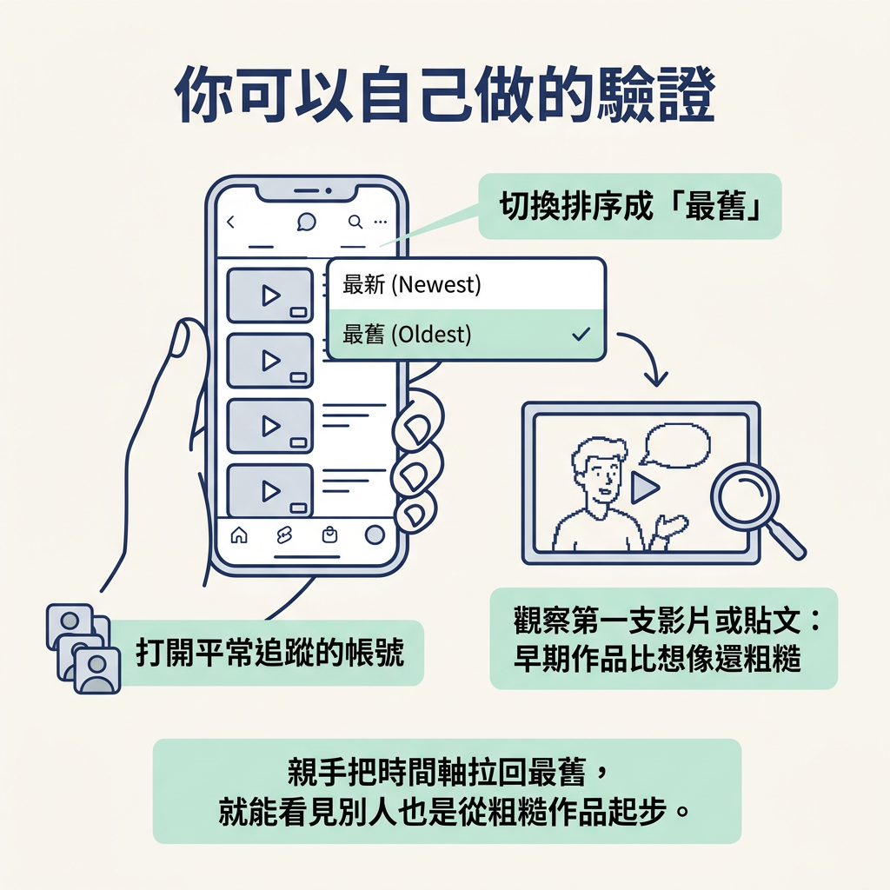

認出「要先做到一定水準才能開始發文」是新手常見的阻礙，並用成功創作者早期的作品，檢查這個想法是否站得住腳。
上一節談到兩個影響創作的槓桿：品質與體量。新手通常該先增加產出量，因為「品質不夠好」常是讓人遲遲不敢開始的心理障礙。這一節就從品質談起，看看這道障礙是怎麼形成的，又能怎麼拆解。
講師觀察到，新手創作者最常遇到的阻礙之一，就是相信自己必須先達到某種品質水準，才能開始發文。這聽起來像是在要求自己進步，實際上卻可能變成一條禁令：只要還沒達標，就不准開始。底下就來檢查這條禁令站不站得住腳。
先分清楚兩件事：「我想把作品做得更好」和「在作品夠好之前，我不准自己發」並不一樣。前者可以推動你進步，後者卻會把你擋在起點。
難處在於，你很可能等不到自己認定的「夠好」。能力進步後，標準也會跟著提高；今天看來還可以的作品，過一陣子又可能讓你覺得不滿意。於是「再準備一下」一拖再拖，準備期變得沒有盡頭。
你不必只靠意志力說服自己「不完美也沒關係」。講師建議，可以直接查看成功創作者最早的作品，看看他們起步時的樣子，用看得見的例子檢驗這個想法。
他舉了三個例子：
把這些例子放在一起，會看到一件和直覺相反的事：你反而很難找到一位從第一支作品起，就有成熟製作品質的創作者。既然這些人也是從粗糙的作品開始，「先做到很好」就不是開始創作的必要條件，比較像是事後回看時產生的錯覺。
這跟學習方式有關，不是喊一句「放輕鬆」就好。技能要靠實際動手培養。第一支影片的價值，不一定在於它做得多好，而在於它讓你完成第一輪創作：選題、開拍、發布，再看看觀眾怎麼回應。跑完這一輪，你才有具體的經驗和回饋，能用來調整下一次的作品。
所以，品質是反覆嘗試、修正後逐漸長出來的成果，不是開始嘗試之前必須具備的條件。如果你把「先夠好」設成門檻，就把成果誤當成前提，順序也就顛倒了。你會一直留在起跑線前，等待一個不會憑空出現的許可。
話先說在前面：本節要拆的是「因為不夠好，所以不能發」這道禁令，不是要說品質永遠不重要。品質確實會在創作的某些階段變得重要，而且有相應的門檻。至於門檻是什麼、你現在在哪個階段，會在下一節討論。
你可以親自檢查這個想法：打開兩、三個平常追蹤的帳號，把作品排序成「最舊」，再看看他們的第一支影片或第一則貼文。你可能會發現，早期作品比自己想像的還粗糙。

這個小練習能把「其實不用怕」從一句抽象的安慰，變成眼前看得到的證據。親眼看過之後，通常更容易鬆動「我一定要先做到完美才能開始」的念頭。
「要先達到某種品質才能發」是新手常見的阻礙，但它不是創作的必要條件。Chris Williamson、MrBeast 和講師自己的早期作品都很粗糙；很難找到一位從製作品質成熟的作品起步的創作者。粗糙的起步之所以正常，是因為品質是反覆迭代後的成果，而不是開始之前的前提。
不再把品質當成起步門檻之後，下一個問題就會浮現：品質到底什麼時候才需要特別在意？下一節會用一張隨追蹤數增加而變化的門檻表，幫你判斷自己現階段該不該把心力放在品質上。